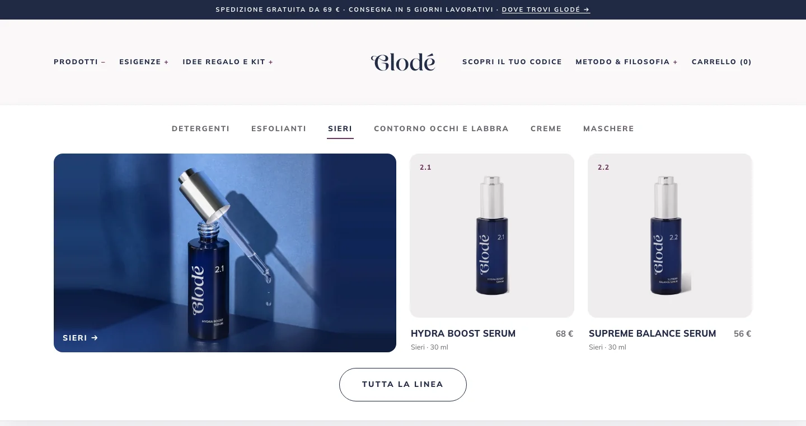

-
Cliccate «Prodotti» → «Collezioni».
 1
1
Quali collezioni ci sono?
- Famiglie (6): Detergenti, Esfolianti, Sieri, Creme, Maschere, Contorno occhi e labbra.
- Esigenze (8) e tipi di pelle (6), per esempio «Idratazione» o «Pelle secca».
- Manuali: «I più amati» e «Idee regalo», senza niente nella colonna «Condizioni».
«Home page» è una collezione di serie di Shopify, vuota e non usata dal sito: lasciatela così.
-
Una collezione automatica, per esempio «Sieri», si riempie da sola: non cambiatene le condizioni.
 Non qui
Non qui
2
Non qui
Non qui
2
Perché?
Catalogo, filtri e menu sono costruiti su queste regole. Non cambiate neanche nome e indirizzo della collezione, né i campi in fondo alla pagina della collezione. Il cestino in alto a destra elimina la collezione: mai.
-
Per far entrare un prodotto, cambiate il suo «Tipo», le «Esigenze» o i «Tipi di pelle».
 3
3
Dove?
Nella scheda del prodotto: il «Tipo» in Creare un prodotto nuovo (passo 7), le altre in Esigenze e tipi di pelle. Il prodotto entra appena è attivo.
-
Le collezioni manuali, «I più amati» e «Idee regalo», le riempite voi.
 4
4
Come?
-
L’immagine in alto a sinistra è la copertina del menu a tendina: usate la stessa forma di quelle di oggi.
5
Che forma?
Orizzontale, circa 1,6 volte più larga che alta (per esempio 1425×887 pixel), con il prodotto intero al centro. Dopo, controllate il menu.

Sul sito
Passando su una voce di «Prodotti» o di «Esigenze» compaiono la copertina della collezione e al massimo due prodotti; tutti gli altri si vedono cliccando la voce.
L’ordine dei prodotti dentro una collezione automatica lo decide Shopify («Più pertinenti»): non serve toccarlo.